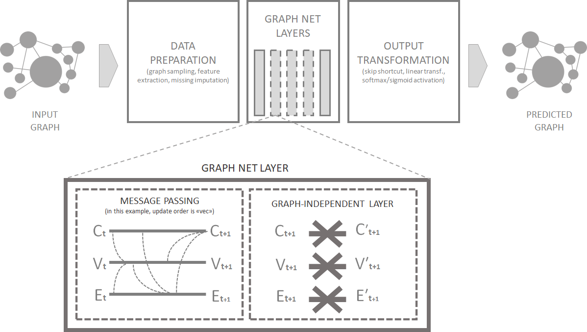

오늘 소개할 R package는 Spinner package입니다. 로고에도 그려진 것처럼 Spinner는 실을 만드는 방적기, 방적공을 의미합니다. Spinner package는 토치(Torch)를 기반으로 Graph Net을 구현해주는 패키지입니다. 자세한 내용은 Spinner package를 만든 Giancarlo Vercellino의 Rpub을 참조하세요.
Graph Layer
Graph Net은 그래프(혹은 구조화된 데이터)를 처리하기 위해 설계된 신경망 아키텍처입니다. Distill의 <A Gentle Introduction to Graph Neural Networks> 논문을 정리해보면서 이미 Graph Net을 살펴본 바 있습니다. 이웃한 노드나 엣지가 서로 정보를 교환해서 각각의 노드의 상태를 업데이트하는 Massage Passing을 이용한 Layer를 다루었죠. 그 중에서 노드에서 노드로, 엣지에서 엣지로, 노드에서 엣지로, 엣지에서 노드로, 혹은 이 4가지 방법을 모두 결합해서 마치 천을 직조하듯 구성한 Weave Layer도 살펴봤습니다.
기본적인 Graph Net의 연산과 마찬가지로 Spinner package는 그래프의 노드와 엣지 간에 정보를 전파하는 메시지 전달 연산(Message-Passing Operations), 그리고 수신된 메시지를 기반으로 새로운 노드, 엣지의 Feature를 계산하는 업데이트 함수로 구성됩니다.

Data Preparation
Spinner package는 그래프 샘플링(Graph Sampling)과 특징 추출(Feature Extraction)이라는 두 가지 작업에서부터 시작됩니다. 거대한 그래프의 경우에는 샘플링 값을 설정하고 Graph Density Threshold를 조정해서 하위 그래프를 샘플링할 수 있습니다. 그런 다음 Spinner package는 특징(Feature)을 추출합니다. 그래프에 Feature 값이 없는 경우에는 알고리즘은 Null value, 인접 임베딩 또는 라플라시안 임베딩을 이용해서 New Feature를 계산합니다. Null value는 관련 정보가 없다는 의미이고, 인접 임베딩은 그래프의 인접 행렬을 통해 노드 간의 관계를 포착합니다. 라플라시안 임베딩은 라플라시안 행렬을 분해하여 로컬 및 글로벌 속성을 포착합니다. 결측값이 있는 특징의 경우 empirical distribution을 사용하여 무작위 대입을 수행합니다.
Graph Net Layers
Spinner가 생성한 레이어는 Message Passing과 graph-independent forward network로 구성됩니다. Message Passing에서 그래프의 각 노드는 인접 노드로부터 메시지를 받고, 받은 메시지는 노드의 Feature 표현을 업데이트하는 데 사용됩니다. update_order 조건을 사용하면 다양한 옵션을 사용할 수 있죠. 업데이트의 조합은 선형 변환을 기반으로 합니다. graph-independent forward network는 업데이트된 Feature 표현을 가져와 DNN 변환을 적용합니다. 이 과정은 선택한 수의 레이어에 대해 반복되므로 알고리즘이 기능을 세분화하고 그래프의 더 복잡한 표현을 구축할 수 있습니다.
Output Transformation
Graph Net Layers가 완료되면 optional skip shortcut을 적용할 수 있습니다. skip shortcut을 사용하면 알고리즘이 특정 레이어를 건너뛰고 입력을 출력 레이어에 직접 연결하여 알고리즘의 효율성을 개선할 수 있죠. 출력 단계에선 Regression Tasks에 대한 선형 변환(Continuous range에 매핑하는 선형 변환 / Label Feature의 경우엔 확률 분포에 매핑하는 softmax/sigmoid activation)이 이뤄집니다. 마지막 단계에선 주어진 그래프 특징에 대한 예측 값 또는 확률을 나타내는 그래프 넷 알고리즘의 최종 출력을 생성합니다.
Examples with a graph
이제부터 본격적으로 그래프를 가지고 진행해보겠습니다. r에서 그래프를 그리기 위해 igraph package와 ggplot2 환경에서 그래프를 그리게 해주는 ggnetwork package를 이용하겠습니다. 우선 100개의 노드를 가지고 있는 작은 더미 그래프를 만들어보죠. 그래프에는 노드와 엣지에 각각 2개의 Feature를 넣어두겠습니다. 먼저 하나는 정규화된 연결 중심성(Degree Centrality, 한 노드에 연결된 엣지의 개수)이고, 또 하나는 cut of betweenness statstics입니다. 컨텍스트/글로벌 그래프에 대한 특징 값은 따로 없습니다.
spinner 함수에 필요한 최소한의 파라미터는 그래프, 예측 대상(노드나 엣지), 노드, 에지 및 컨텍스트 Feature에 대한 레이블입니다. (위에서도 이야기 했지만 Feature가 없는 경우엔 임베딩 방법을 사용하여 새로운 특징을 계산합니다. Feature가 없는 경우 기본 임베딩 크기는 5이고 relative arguments를 사용하여 노드, 엣지 및 컨텍스트에 대해 수정할 수 있습니다) 이번 연습에서는 모든 노드와 엣지의 Feature를 사용하고(기본 옵션으로 컨텍스트를 5개의 0 벡터로 초기화) 엣지에 예측 타깃을 설정하여 2-folds, 3-repetitions의 cross-validation을 해보겠습니다.